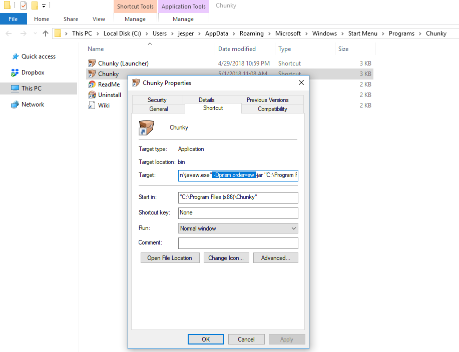
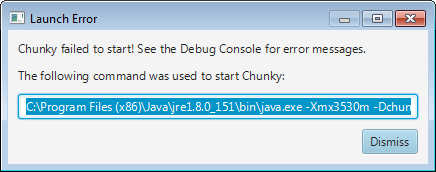
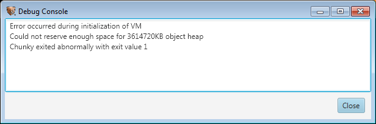

Search Documentation
Search Documentation
- About
 Gallery
Gallery- Getting Started
- User Interface
- Documentation
- Community
- Resources
Troubleshooting Chunky
This page lists some common issues and how to fix them.
Chunky opens as a blank window (Windows)
If the Chunky or Chunky Launcher window is blank when you start it, this
is caused by an issue in the JavaFX hardware renderer for Windows.
The only known solution is to add -Dprism.order=sw to the Java command
when starting Chunky. The option needs to be added in the "Java options"
field in the launcher. If not even the launcher will open, then the
start menu shortcuts for Chunky need to be edited, like this:

Later releases will fix this issue by adding the -Dprism.order=sw option
by default to the Chunky shortcuts.
Chunky does not launch anymore (Windows)
If you installed Chunky using the Windows installer and later updated the Java installation, Chunky may stop working because the path to the Java installation has changed. This can be fixed by uninstalling Chunky and reinstalling it again.
Trouble launching on Linux
On some linux distributions like Ubuntu, Java is not packaged with JavaFX, which is needed to run Chunky.
Typicallly, the error message contains a NoClassDefFoundError.
On Ubuntu 16.04, this is solved by installing package openjfx:
sudo apt-get install openjfx
Memory Limit won't go above 2Gb
If you are not able to set the memory limit for Chunky greater than 2Gb, despite having more than 2Gb of RAM in your computer, then you need to upgrade to a 64-bit Java installation. A 32-bit Java installation does not allow more than 2Gb for the Chunky memory limit.
If you try launching Chunky with more than 2Gb of memory in a 32-bit Java installation, you will get an error message similar to this:

Check the debug console (enable it under Advanced Settings in the launcher):

The line that says "Could not reserve enough space for ... object heap" indicates that the Java installation did not allow the configured memory limit.
Black blocks with a red X
This happens when Chunky could not find a Minecraft installation to load textures from.
The black box with a red cross over it is the texture used in place of missing textures. See the below section for more about how to fix missing/wrong textures.
Wrong Textures / Changing Texture Pack
Chunky needs to load textures from a Minecraft installation or a resource pack, otherwise it uses its own built-in textures for the missing texutre.
If you get the wrong textures when you create a 3D scene, there are two things you can do:
- Update the path to your Minecraft installation in the Chunky launcher.
- Load a resource pack that contains the missing textures:
- In the main Chunky window, click the Options tab then click "Edit resource packs".
- Use the "Resource Packs" window to select your texture pack.
See also this reddit thread.
I try to create a new scene but it is empty
First, make sure that you have selected some chunks before creating a new scene.
If you still have the problem it may be caused by the "Y cutoff" setting. The "Y cutoff" setting in the Render Controls window can prevent the blocks from being loaded, especially if you are loading a superflat world. All blocks that have a Y value (height) less than the Y cutoff value will not be loaded.
The problem can be fixed by setting the "Y cutoff" value to 0 in the Render Controls window and then reloading the chunks, or creating a new scene.